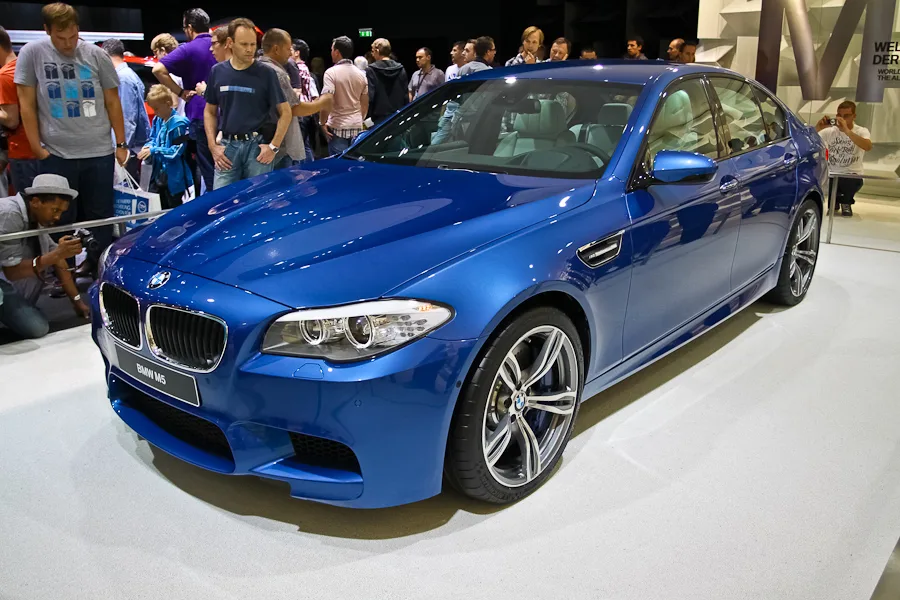
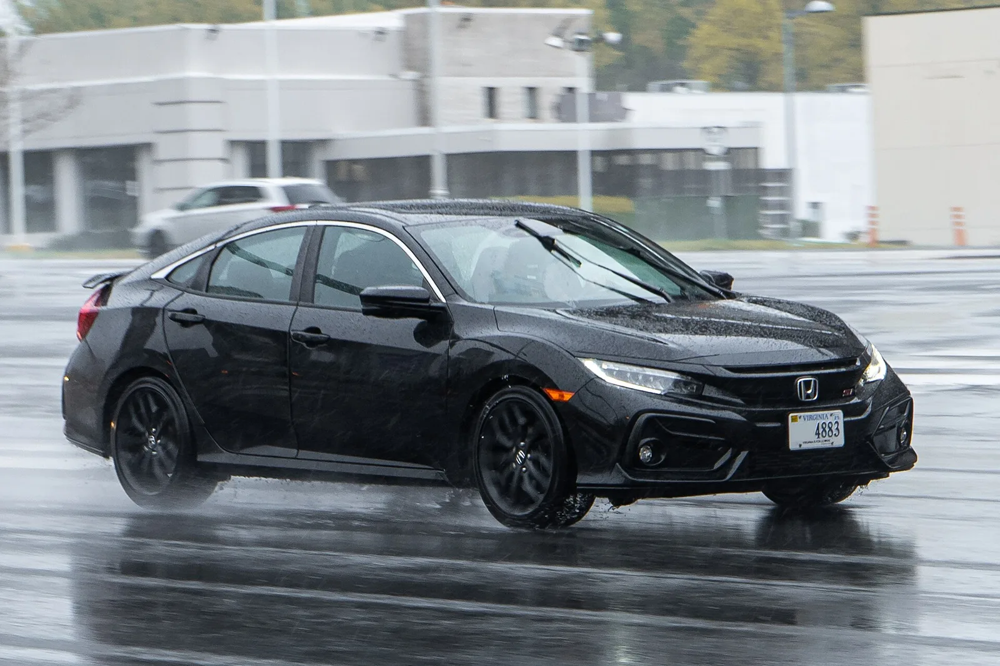

▲ F10 M5는 마지막 후륜구동 M5다 ⓒ Wikimedia Commons
BMW F10 M5의 중고 매물 중 1만8,993달러짜리가 있습니다. 2013년식, 11만8,014마일입니다.
2026년형 혼다 시빅 LX 신차는 2만4,695달러입니다.
560마력 V8 세단이 150마력 준중형 신차보다 쌉니다. 다만 계산은 여기서 끝나지 않습니다.
1. 가격표
| 연식 | 주행거리 | 가격 | 지역 |
|---|---|---|---|
| 2016 | 65,361마일 | 27,997달러 | 애리조나 |
| 2015 | 67,952마일 | 29,199달러 | 캔자스 |
| 2013 | 76,378마일 | 30,199달러 | 워싱턴 |
| 2013 | 118,014마일 | 18,993달러 | 캘리포니아 |
| 2015 | 149,458마일 | 20,369달러 | 오하이오 |
| 2015 | 132,883마일 | 22,220달러 | 텍사스 |
| 평균(48건) | 32,674달러 | 범위 12,628~86,000달러 | |
2만 달러 아래 매물은 전부 11만 마일(약 18만 km)을 넘겼습니다. 가격과 주행거리가 정확히 반비례합니다.
| 트림 | 가격 | 출력 |
|---|---|---|
| LX | 24,695달러 | 150마력 |
| 스포츠 | 26,695달러 | 150마력 |
| 스포츠 하이브리드 | 29,395달러 | 200마력 |
| Si | 31,495달러 | 200마력 |
| 스포츠 투어링 하이브리드 | 32,295달러 | 200마력 |
2. 문제는 그다음이다
| 항목 | F10 M5 | 시빅 | 배수 |
|---|---|---|---|
| 연간 정비비 | 1,246달러 | 368달러 | 3.4배 |
| 10년 총 정비비 | 15,628달러 | 5,632달러 | 2.8배 |
| 보험(월) | 319달러 | 207달러 | 1.5배 |
| 보험(연) | 3,826달러 | 2,479달러 | 1.5배 |
연간 정비비와 보험료만 더해도 M5는 5,072달러, 시빅은 2,847달러입니다. 차이는 연 2,225달러입니다.
구매가 차이(1만8,993 대 2만4,695달러)는 5,702달러입니다. 산술적으로 2년 반이면 그 차이가 사라집니다. 그 뒤로는 M5가 더 비싼 차가 됩니다.
여기에 연료비가 빠져 있습니다. 4.4리터 트윈터보 V8과 2.0리터 하이브리드의 연비 차이는 이 계산에 포함되지 않았습니다.
3. 한 번에 나가는 금액
| F10 M5 | 비용 |
|---|---|
| 알터네이터 | 1,825~2,723달러 |
| 스티어링 너클 | 1,147~1,307달러 |
| 브레이크 진공펌프 | 1,041~1,185달러 |
| 그 외 흔한 항목: 워터펌프, 서스펜션 부싱, 변속기 오일 쿨러 | |
| 항목 | 비용 |
|---|---|
| 알터네이터 | 753~1,236달러 |
| 선루프 스위치 | 415~434달러 |
| EGR 밸브 | 362~450달러 |
| 주요 수리 발생 확률 16.08% — 평균보다 0.88%p 낮다 | |
같은 알터네이터인데 M5는 최대 2,723달러, 시빅은 최대 1,236달러입니다. 부품값과 공임이 함께 벌어집니다.
더 중요한 것은 예측 가능성입니다. 시빅은 주요 수리 확률이 평균보다 낮다는 데이터가 있습니다. 11만 마일을 넘긴 M5에는 그런 안정성이 없습니다.

▲ 같은 알터네이터 교체도 M5는 최대 2,723달러가 든다
4. "마지막 후륜 M5"라는 가치
F10(2013~2016)은 후륜구동으로 나온 마지막 M5입니다. 이후 세대부터 M xDrive 사륜구동으로 바뀌었습니다.
| 엔진 | 4.4L 트윈터보 V8 |
|---|---|
| 출력 | 560~575마력 |
| 토크 | 500lb-ft |
| 0→60mph | 3.7초 (자동) |
| 최고속도 | 190mph |
| 구동 | 후륜 |
사륜 M5는 더 빠릅니다. 출발 접지력이 좋아 가속 수치가 개선됩니다. 대신 무거워지고 성격이 달라집니다.
"마지막 후륜"이라는 타이틀이 이 차의 잔가를 지탱합니다. 평균 3만2,674달러라는 시세에는 이 프리미엄이 반영돼 있습니다.
5. 그래도 사겠다면
| 항목 | 이유 |
|---|---|
| 정비 이력 | 가격보다 중요하다 — 이력 없는 저가 매물은 위험 |
| 냉각계통 | 워터펌프는 알려진 소모 항목 |
| 변속기 오일 쿨러 | 흔한 수리 항목으로 지목됐다 |
| 서스펜션 부싱 | 주행거리에 비례해 소모 |
| 예비비 | 구매가 외에 연 5,000달러 수준을 별도로 잡아야 한다 |
마지막 항목이 핵심입니다. 정비비 1,246달러와 보험 3,826달러를 더하면 연 5,072달러입니다. 여기에 연료비와 타이어가 별도로 붙습니다.
1만8,993달러라는 가격은 입장료일 뿐입니다.

▲ 시빅 Si(3만1,495달러)는 200마력에 신차 보증이 붙는다

▲ 시빅 LX는 2만4,695달러에 신차 보증이 붙는다
6. 정리
F10 M5(2013~2016)의 중고 평균가는 3만2,674달러이고, 저가 매물은 1만8,993달러(2013년, 11만8,014마일)까지 내려옵니다. 2026년형 시빅 LX 신차는 2만4,695달러입니다.
M5는 4.4L 트윈터보 V8로 560~575마력, 0→60mph 3.7초, 시빅 LX는 150마력입니다. F10은 마지막 후륜구동 M5입니다.
다만 연간 정비비가 1,246달러로 시빅(368달러)의 3.4배이고, 보험도 연 3,826달러 대 2,479달러입니다. 구매가 차이 5,702달러는 2년 반이면 상쇄됩니다. 알터네이터 교체 하나가 최대 2,723달러입니다.